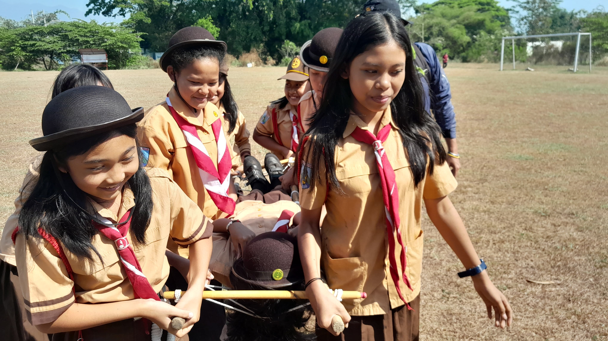
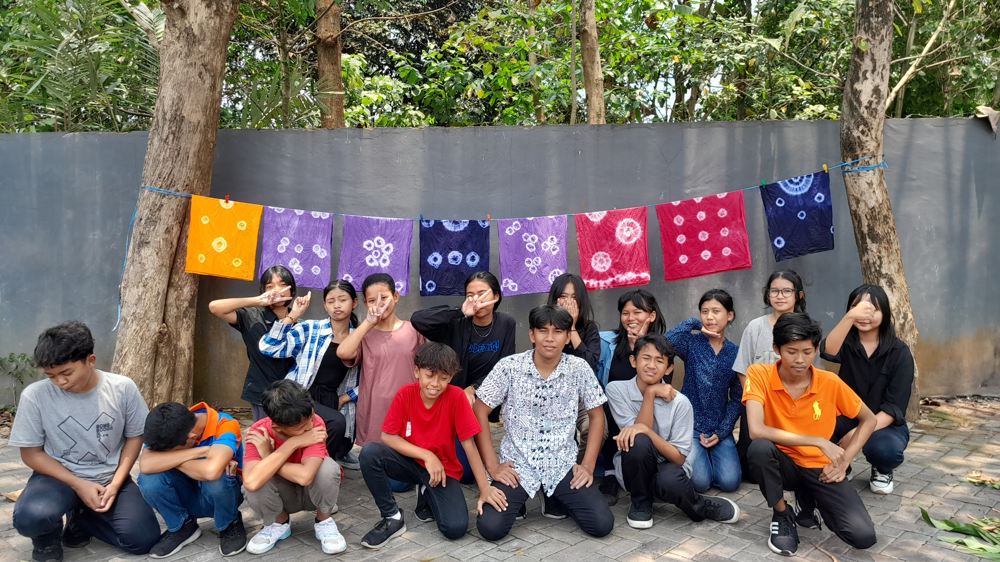
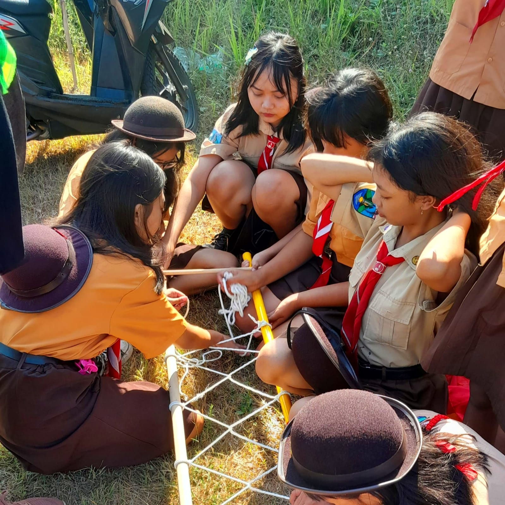
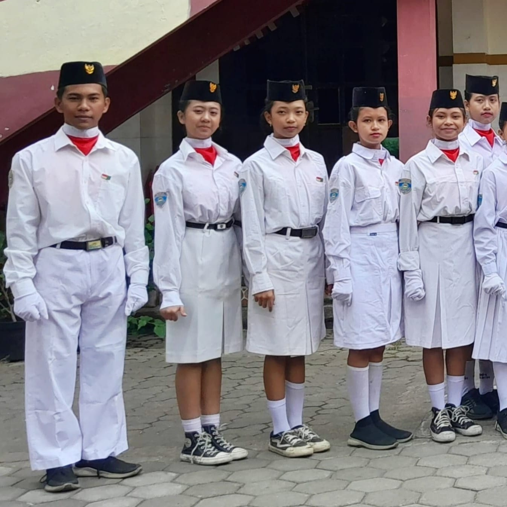
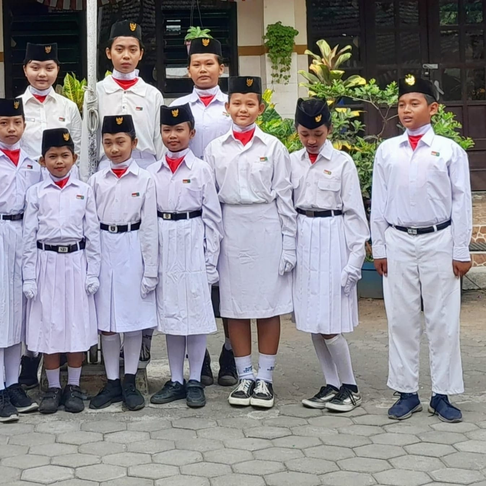

SMP 4 YPK Malang adalah lembaga pendidikan yang memiliki komitmen tinggi dalam
mencetak generasi yang berprestasi, berakhlak mulia, serta memiliki rasa cinta terhadap budaya dan seni.
Sebagai bagian dari upaya kami untuk mendukung perkembangan bakat siswa, SMP 4 YPK Malang dikenal
sebagai sekolah yang sering mengadakan pameran seni rupa lukis dan seni tari tradisional.
Kami memberikan kesempatan bagi para siswa untuk mengekspresikan kreativitas mereka
dalam bidang seni rupa. Setiap tahunnya, SMP 4 YPK Malang menggelar pameran seni rupa lukis yang
menampilkan karya-karya luar biasa dari siswa. Pameran ini bertujuan untuk memperkenalkan dan
melestarikan berbagai bentuk seni, sekaligus memberikan ruang bagi siswa untuk mengembangkan potensi
seni mereka.
Sebagai sekolah yang menjunjung tinggi budaya lokal, SMP 4 YPK Malang juga rutin
mengadakan pementasan seni tari tradisional. Kegiatan ini tidak hanya bertujuan untuk melestarikan
warisan budaya, tetapi juga untuk mengajarkan kepada siswa tentang pentingnya menjaga keberagaman seni
dan budaya Indonesia. Melalui seni tari, kami ingin mendorong siswa untuk lebih menghargai tradisi dan
kebudayaan yang telah ada sejak lama.
Kami bangga menjadi bagian dari perjalanan pendidikan yang memberikan ruang bagi para
siswa untuk berkembang secara holistik, tidak hanya dalam aspek akademik, tetapi juga dalam seni dan
budaya. Di SMP 4 YPK Malang, kami berkomitmen untuk terus menginspirasi dan memberdayakan siswa kami
untuk mencapai potensi terbaik mereka.



Alamat : JL. Ki Ageng Gribig 248 Kedungkandang kota Malang | Telepon :
085768654338 | Email : smp4ypkmalang@gmail.com